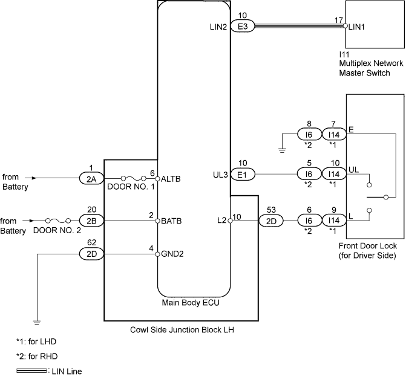
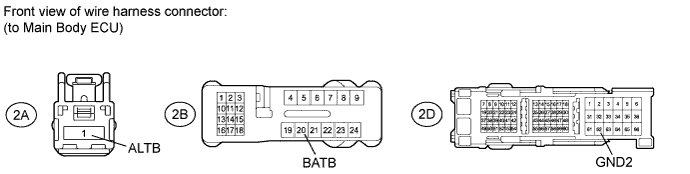
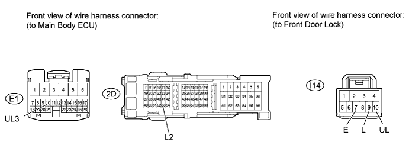
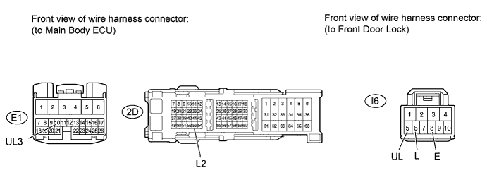
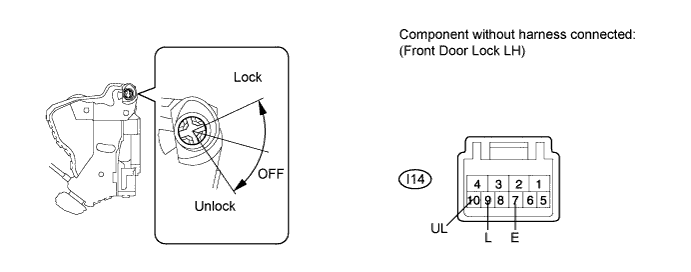
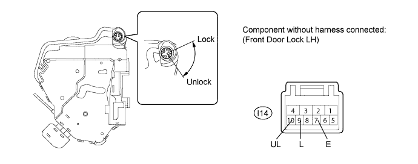
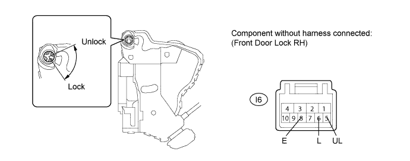
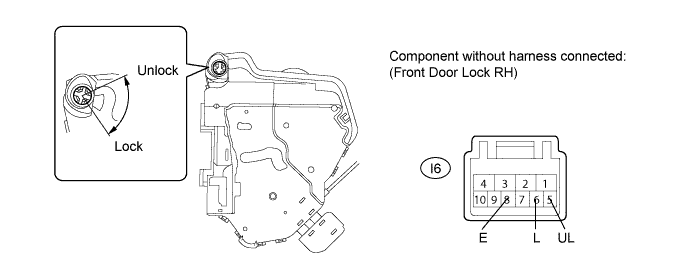

POWER DOOR LOCK CONTROL SYSTEM > All Doors cannot be Locked / Unlocked Simultaneously |

| 1.CHECK DOOR LOCK OPERATION |
| Result | Proceed to |
| All doors cannot be locked through multiplex network master switch and driver side door key cylinder | A |
| All doors cannot be locked through multiplex network master switch | B |
| All doors cannot be locked through driver side door key cylinder | C |
|
| ||||
|
| ||||
| A | |
| 2.INSPECT FUSE (DOOR NO. 1, DOOR NO. 2) |
Remove the DOOR NO. 1 fuse from the cowl side junction block LH.
Remove the DOOR NO. 2 fuse from the engine room No. 1 relay block.
Measure the resistance according to the value(s) in the table below.
| Tester Connection | Condition | Specified Condition |
| DOOR NO. 1 fuse | Always | Below 1 Ω |
| DOOR NO. 2 fuse | Always | Below 1 Ω |
|
| ||||
| OK | |
| 3.CHECK HARNESS AND CONNECTOR (MAIN BODY ECU - BATTERY AND BODY GROUND) |

Disconnect the 2A, 2B and 2D ECU connectors.
Measure the voltage according to the value(s) in the table below.
| Tester Connection | Condition | Specified Condition |
| 2A-1 (ALTB) - Body ground | Always | 11 to 14 V |
| 2B-20 (BATB) - Body ground | Always | 11 to 14 V |
Measure the resistance according to the value(s) in the table below.
| Tester Connection | Condition | Specified Condition |
| 2D-62 (GND2) - Body ground | Always | Below 1 Ω |
|
| ||||
| OK | ||
| ||
| 4.CHECK MULTIPLEX NETWORK MASTER SWITCH ASSEMBLY (OPERATION) |
Replace the multiplex network master switch with a normally functioning one (Click here).
Check that all doors can be locked and unlocked by using the multiplex network master switch.
|
| ||||
| OK | ||
| ||
| 5.READ VALUE USING INTELLIGENT TESTER (DOOR KEY LINKED LOCK AND UNLOCK SWITCH) |
Use the Data List to check if the door key linked lock and unlock switches are functioning properly.
| Tester Display | Measurement Item/Range | Normal Condition | Diagnostic Note |
| Door Key Linked Lock SW | Door key linked lock switch signal / ON or OFF | ON: Driver side door key cylinder turned to lock position OFF: Driver side door key cylinder not turned | - |
| Door Key Linked Unlock SW | Door key linked unlock switch signal / ON or OFF | ON: Driver side door key cylinder turned to unlock position OFF: Driver side door key cylinder not turned | - |
|
| ||||
| OK | ||
| ||
| 6.CHECK HARNESS AND CONNECTOR (FRONT DOOR LOCK - MAIN BODY ECU AND BODY GROUND) |
for LHD:

Disconnect the I14 door lock connector.
Disconnect the E1 and 2D ECU connectors.
Measure the resistance according to the value(s) in the table below.
| Tester Connection | Condition | Specified Condition |
| I14-10 (UL) - E1-10 (UL3) | Always | Below 1 Ω |
| I14-9 (L) - 2D-53 (L2) | Always | Below 1 Ω |
| I14-7 (E) - Body ground | Always | Below 1 Ω |
| I14-10 (UL) - Body ground | Always | 10 kΩ or higher |
| I14-9 (L) - Body ground | Always | 10 kΩ or higher |
for RHD:

Disconnect the I6 door lock connector.
Disconnect the E1 and 2D ECU connectors.
Measure the resistance according to the value(s) in the table below.
| Tester Connection | Condition | Specified Condition |
| I6-5 (UL) - E1-10 (UL3) | Always | Below 1 Ω |
| I6-6 (L) - 2D-53 (L2) | Always | Below 1 Ω |
| I6-8 (E) - Body ground | Always | Below 1 Ω |
| I6-5 (UL) - Body ground | Always | 10 kΩ or higher |
| I6-6 (L) - Body ground | Always | 10 kΩ or higher |
|
| ||||
| OK | |
| 7.INSPECT FRONT DOOR LOCK ASSEMBLY (DOOR KEY LINKED LOCK AND UNLOCK SWITCH) |
for LHD (w/o Double Locking Function):

Remove the front door lock LH (Click here).
Measure the resistance according to the value(s) in the table below.
| Tester Connection | Condition | Specified Condition |
| 9 (L) - 7 (E) | Lock | Below 1 Ω |
| 9 (L) - 7 (E) | Off | 10 kΩ or higher |
| 10 (UL) - 7 (E) | Unlock | Below 1 Ω |
| 10 (UL) - 7 (E) | Off | 10 kΩ or higher |
for LHD (w/ Double Locking Function):

Remove the front door lock LH (Click here).
Measure the resistance according to the value(s) in the table below.
| Tester Connection | Condition | Specified Condition |
| 9 (L) - 7 (E) | Lock | Below 1 Ω |
| 9 (L) - 7 (E) | Off | 10 kΩ or higher |
| 10 (UL) - 7 (E) | Unlock | Below 1 Ω |
| 10 (UL) - 7 (E) | Off | 10 kΩ or higher |
for RHD (w/o Double Locking Function):

Remove the front door lock RH (Click here).
Measure the resistance according to the value(s) in the table below.
| Tester Connection | Condition | Specified Condition |
| 5 (UL) - 8 (E) | Unlock | Below 1 Ω |
| 5 (UL) - 8 (E) | Off | 10 kΩ or higher |
| 6 (L) - 8 (E) | Lock | Below 1 Ω |
| 6 (L) - 8 (E) | Off | 10 kΩ or higher |
for RHD (w/ Double Locking Function):

Remove the front door lock LH (Click here).
Measure the resistance according to the value(s) in the table below.
| Tester Connection | Condition | Specified Condition |
| 5 (UL) - 8 (E) | Unlock | Below 1 Ω |
| 5 (UL) - 8 (E) | Off | 10 kΩ or higher |
| 6 (L) - 8 (E) | Lock | Below 1 Ω |
| 6 (L) - 8 (E) | Off | 10 kΩ or higher |
|
| ||||
| OK | ||
| ||